Veremos herramientas utiles para el desarrollo con REACT como NPM, BABEL, WEBPACK aunque tambien se utilizaran
Se puede implementar REACT utilizando la libreria sin compilar pero lo mas recomendado es utilizar JSX el cual es un lenjuage compilado. Para la implementacion de REACT se utilizara el modulo create-react-app.
NPM: Es un gestor de modulos de JS.
BABEL: Es un traductor de codigo JS con estandares nuevos, lo que permite que el projecto sea utilizable en cualquier navegador, aunque este no soporte los ultimos estandares del ecmascript.
WEBPACK: Permite ulizar modulos para reutilizar codigos, es muy util utilizarlo junto con BABEL.
Para abrir las DevTools se utiliza ctrl+shift+i.
Las DevTools posee una consola la cual permite una interaccion entre el programa y el navegador.
Para crear una app de REACT utilizamos el comando CREATE-REACT-APP nombre app, este comando puede ser instalado con NPM.
Dentro de la carpeta public se encuentra el INDEX.html en el cual se puede encontrar un div de clase root que en donde se generara nuestra aplicacion. El archivo manifest.json se encuentra las cosas necesarias para realizar una PWA.
Dentro de la carpeta src se encuentran todos los archivos de la aplicacion , en el Index.js se encuentra importa el modulo serviceWorker junto con el archivo serviceWorker.js se utiliza para generar una PWA.
Esta seccion permite comprender el entorno de REACT, y todo su entorno como JSX y las expresiones las cuales permiten generar codigo html de forma de reutilizar codigo. Junto con la aplicacion de codigo de CSS para mejor las paginas web.
Los temas vistos en esta seccion son:
JSX es una combinacion entre JS y HTML la cual permite indexar directamente HTML en codigo JS.
Utilizar REACT debo importar el modulo React y ReactDOM.
Para insertar una expresion en JSX, utilizando llaves, dentro de ellos puedo colocar cualquier expresion valida de JS.

Los componentes permiten la reutilizacion de codigo . Existen 2 grandes grupos de componentes los FUNCIONALES y BASADOS EN CLASES. Los mas recomendables para utilizar son los componentes FUNCIONALES ya que necesitan menor cantidad de lineas de codigo gracias a los HOOKS.
Son funciones que retornan una unica etiqueta de HTML. Para llamar un componente un funcional se debe utilizar la nomenclatura clasica de HTML.

Las props son variables de entrada de los componentes, los componentes que se le pasan a un props se deben utilizar llaves aunque para los datos de tipo String son opcionales.

Son clases que extienden de React.Component y debe implementar un metodo render el cual renderiza el componente.
Los componentes basados en clases soportan una actualizacion dinamica, utilizando una variable de clase state y para actulizar el componente se utiliza el metodo setState.
ACLARACION: Para los metodos que utilicen this es recomendable utilizar el metodo bind( this ) para todos los metodos que lo requieran. Es recomendable utilizar inicializadores de propiedades.
Se crea un atributo fuera del constructor y permite presindir del mismo ya que la unica llamada necesaria es la del constructor del padre.
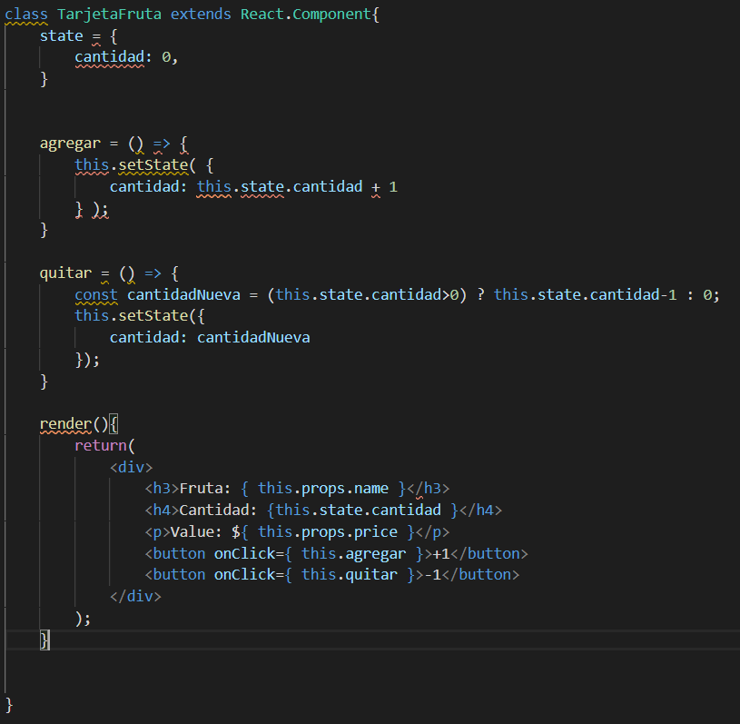
Es muy recomendable tener los componentes separados en diferentes carpetas, para lograr tener el codigo mucho mas ordenado.
Los componentes deben comenzar con mayuscula, ya que sino Babel no tomara como valido.
Para agregar una clase a una etiqueta se utiliza className.
JSX permite declarar modulos de componentes, es decir, es posible crear objetos JSON donde cada atributo sea un componente.
Para indexar codigo CSS debo colocar el atributo style y pasar como argumento un objeto que contenga las propiedades.
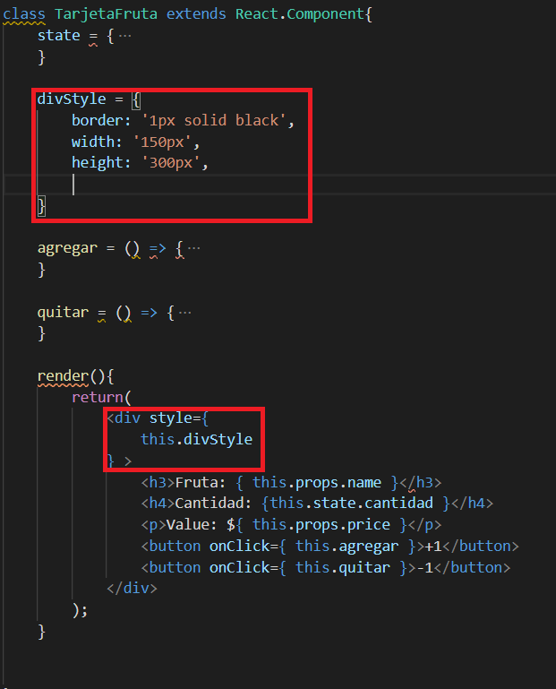
Si el estilo posee un gion medio (-) se utiliza la notacion camelCase. JSX permite la implementacion de operadores ternarios dentro de los objetos, lo cual hace mucho mas sencilla la implementacion de estilos segun los estados.
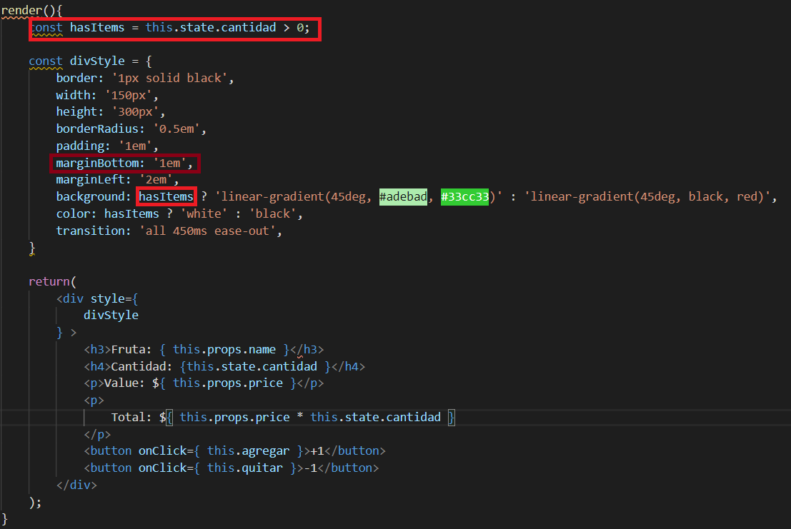
Es recomendable utilizar dentro de cada carpeta del componente sus estilos, lo que permite tener componentes aun mas modularizados. JSX permite importar archivos CSS directamente, esto sucede gracias al paquete de WebPack.
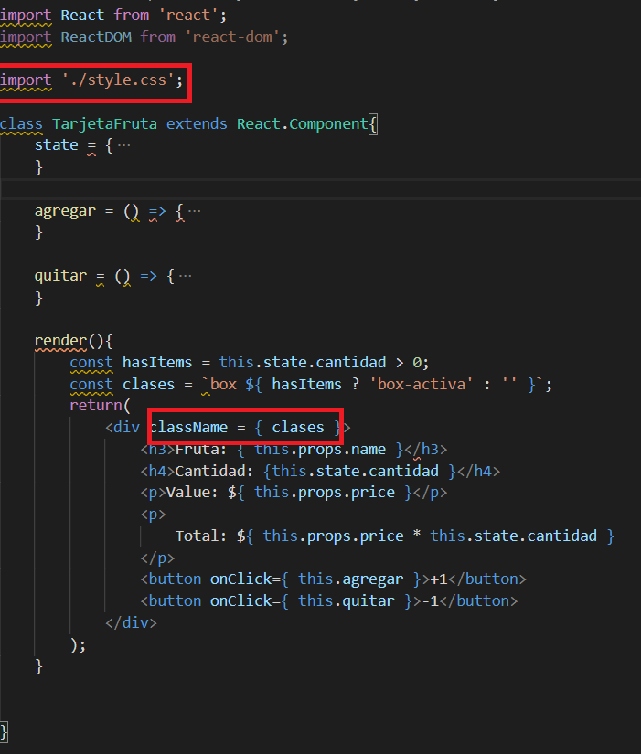
Cuando se desea utilizar un sistema de modulos de CSS el arvhivo debe ser nombrado de la siguiente forma:
nombre.modules.css
Este metodo sirve para combinar objetos, pero si existe una coincidencia entre los atributos de los objetos estas seran sobreescritas por la ultima encontrada. La solucion de este problema puede es utilizar el metodo Assing sobre los atributos que se pisan creando un objetonuevo dentro de ese atributo.
Cuando poseo objetos dentro de objetos se utiliza el operador Spread. El cual remplaza al metodo Assing con una sintaxis mucho mas amigable.
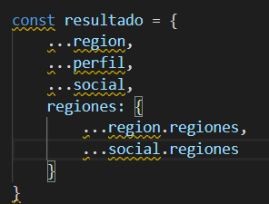
EL operador spread sirve para concatenar arrays de una forma muy util
Podemos utilizar el operador Spread para pasar parametros a los componetes de la forma:
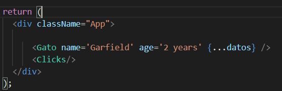
Debido a que el metodo setState es asincrono es muy util utilizar una funcion de callback dentro del metodo.
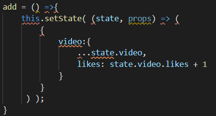
Exiten varios tipos de eventos de Mouse utiles cuando se desea utilizar REACT, algunos de ellos son:
Para mayor informacion se recomienda ir a la pagina oficial de REACT.
Las etiquetas de Input poseen eventos muy utiles como:
Los cuales ayudan a manejar la web de forma dinamica.
REACT permite crear eventos personalizados, lo que hasta ahora lo hemos visto como props aunque ahora podremos pasar informacion de un componente padre a un componente hijo y viceversa.
En el componenete padre utilizamos:
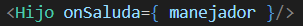
Mientras que en el componente hijo se utiliza
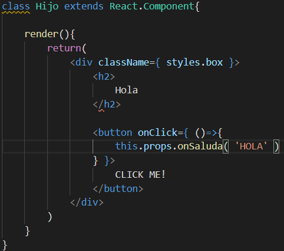
Si bien esta practica esta desaconsejada, en algunas ocasiones puede ser util esto se logra utilizando el atributo dangerouslySetInnerHTML y pasandole un JSON con el atributo __html.
Si se desea utilizar etiquetas dentro de elementos componentes se puede utilizar la prop children, para ello es necesatrio abrir y cerrar la etiqueta del componente.
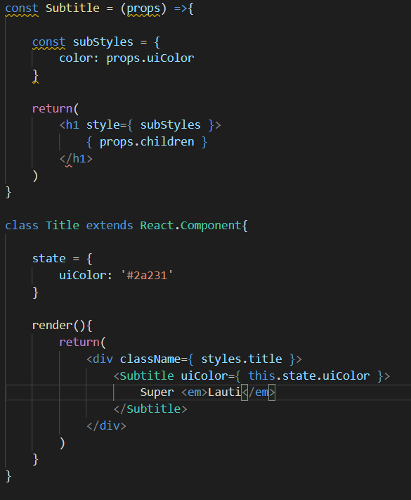
La destructuracion nos permite que el codigo sea mucho mas legible, y menos confuso.
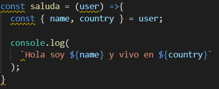
Es valido utilizar valores por defecto y destructuracion concatenada
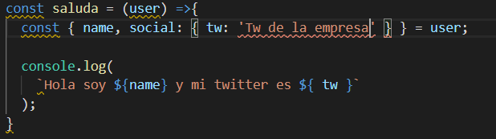
El fragment es una etiqueta de REACT que permite omitir la envoltura de etiquetas en los componentes, las formas de utilizar esta etiqueta son:

Los portals permiten renderizar etiquetas en otra etiqueta que no se root, lo cual es muy util a la hora de hacer modals.
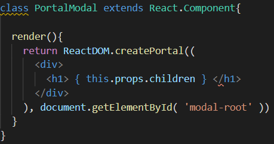
Para utilizar el modal debo llamar el componenete en mi App.js.
ACLARACION: SE DEBE CREAR UN DIV CON EL ID modal-root, pues REACT no es magico.
Para utilizar el control de datos es necesario utilizar el modulo PropTypes de JS, el cual se puede instalar con NPM mediante el comando npm i prop-types.
Cuando se desea utilizar el control de datos, se debe implementar de la forma:
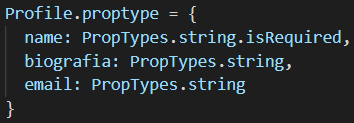
Donde en este caso Profile es un componente basado en clases, pero la nomenclatura para componentes funcionales es la misma.
Como es posible la comprobacion de datos, tambien se puede definir valores por defecto a las props, implementacion es identica a la de las proptypes, con la unica diferencia que debo llamar el atributo defaultProps
En este apartado se tratara el tema de iteradores, ya sea sobre arrays, JSON arrays y JSON.
Para iterar un array en REACT se hace uso del metodo map que poseen los arrays, y junto con la notacion de JSX se retorna un elemento HTML.
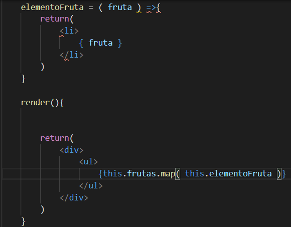
ACLARACION: los arrays pueden contener objetos tales como los JSON.
Para iterar las keys de un objeto JSON se debo implementar de la siguiente forma:
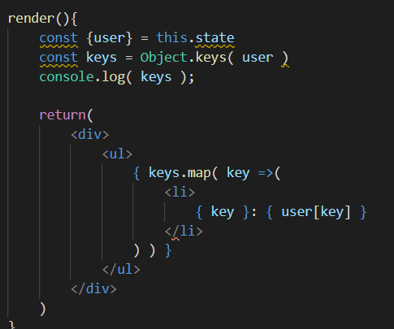
Al recorrer Array es necesario definir un atributo key a las etiqueas, es muy recomendable utilizar el atributo ID que viene de la base de datos.
El beneficio de esta implementacion es que permite que el navegador renderice aquellos elementos que han mutado.
Para pasar informacion del dato iterado se puede utilizar el metodo bind y pasarle como parametros this y DATO.
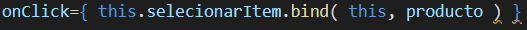
Las REFS son referencias en el DOM, nos permiten utilizar metodos de las etiquetas HTML tales como FOCUS o BLUR.
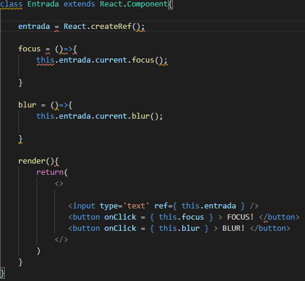
Para implementar accesos al DOM existe la opcion de utilizar las REFS con el metodo:
this.refs_name.current
Con el metodo forwardref puedo enviar una REF de un componente padre a un componente hijo, con la salvedad de que el hijo debe ser funcional.
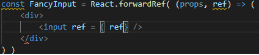
Existen 2 formas de obtener informacion de inputs en REACT, las cuales son:
1- Utilizando REFS es los inputs 2- Utilizando una etiqueta form y en el metodo que llame la accion onSubmit usar el event para acceder a los diferentes inputs.
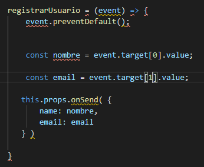
Los inputs controlados se pueden implementar mediante:
El uso de la variable state.
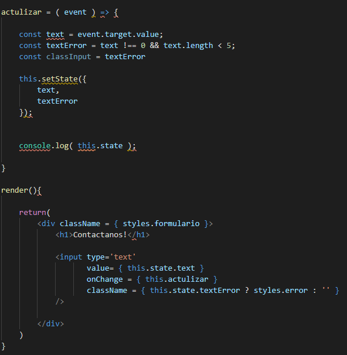
Esta etiqueta permite que la seleccion de una lista de opciones, para leer el valor obtenido es recomendable utilizar inputs controlados.
Permite seleccionar una propiedad, por ejemplo, si el usuario desea recibir emails. Se utiliza igual que cualquier input controlado.
Chrome posse una extension de REACT la cual hace mas sencillo el debugging de las webs con este framework.
Esta herramienta incluye 2 nuevas ventanas a la herramienta de inspeccion de chrome, las cuales son components y profile.
Muestra los componentes incluidos en la web, muy parecido a la inspeccion de elementos, pero separado por componentes.
Permite crear perfiles de lo que sucede en un determinado tiempo del componente, analizando el tiempo que tarda el componente en actulizarce.
REACT permite utilizar un metodo llamador componentDidCatch el cual se puede implementar en cualquier componenete y permite mostrar una vista alternativa cuando sucede un error. Es recomendable implementar una clase que maneje lo errores y que renderice a los elementos hijos cuando todo anda bien y cuando no, renderice una vista personalizada.
Este metodo puede tener dos parametros de entrada: 1- error: contiene el tipo de error. 2- errorInfo: contiene la descripcion del error.
Si bien REACT no posee modulos propios para las solicitudes HTTP es posible utilizar distintos metodos para la implementacion de dichas peticiones.
Una forma de realizar peticiones HTTP es utilizar la funcion fetch, la cual proviene de JS vanilla, debemos recordar que la misma devuelve una promesa, por lo tanto se debe utilizar el metodo then para obtener los resultados.
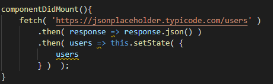
Axios es una libreria de JS que permite dar soporte a navegador antiguos.
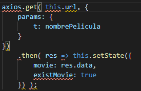
Las sentencias async y await permiten hacer que el codigo asincrono parezca codigo sincrono, esperando una respuesta del servidor antes de seguir ejecutar ciertas lineas de codigo.
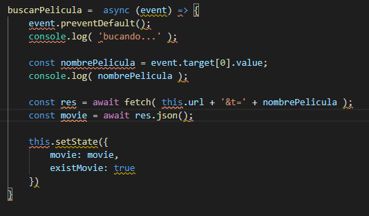
Los metodos de ciclos de vida son solo validos en componentes basados en clases, para componentes funcionales existen los HOOKS, los cuales se veran en otra seccion.
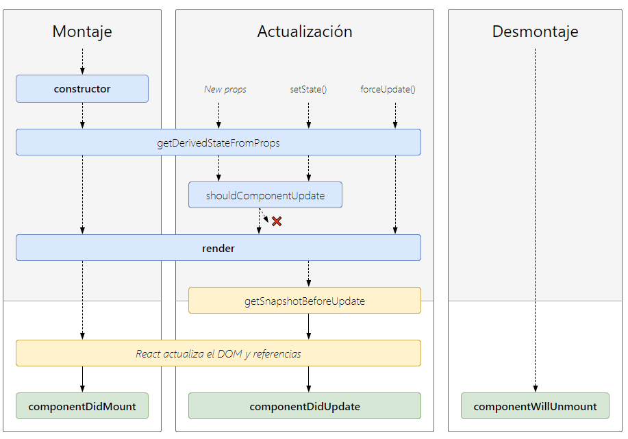
Es el primer metodoen ejecutarse, y sirve para preestablecer valores del estado o para pasar el contexto adecuado a un metodo, utilizando bind, o crear las refs necesarias.
Es el encargado de renderizar el componente, y es el unico metodo obligatorio que debemos implementar siempre, como lo hemos venido haciendo a lo largo de este curso.
Se ejecuta luego del render, durante el montaje, y es un excelente lugar para realizar solicitudes HTTP
Es un metodo identico al anterior solo que se ejecuta cada vez que sucede una actualizacion, es decir, cuando se ejecuta un cambio en el state del componente, un cambio en las props recibidas o cuando se fuerza la actulizacion del componenete.
Este metodo es util para realizar solicitudes HTTP que dependan de alguna prop.
DATO: el metodo puede recibir como primer dato las props previas y como segundo dato las nuevas props, lo cual es util para ahorrar datos a la hora de hacer solicitudes HTTP.
Se ejecuta inmediatamente luego del render y antes de actualizar el DOM, lo cual nos permite capturar datos del DOM antes de su actualizacion.
El valor que retorna este metodo llega al metodo componentDidUpdate.
Es muy poco frecuente la implementacion de este metodo estatico, por lo cual no se puede acceder a propiedades del componente , su utilidad principal es actualizar al props de forma dinamica, como entrada posee nextProp y el prevState.
Este metodo debe retornar un JSON el cual se mezclara con el state actual.
Se ejecuta antes del render y decide si el render se realizara o no. Este metodo debe retornar si o si un valor booleano, ya que sino REACT marcara un error.
Es usual utilizar este metodo para optimizar el rendimiendo de la web app, renderizando solo los elementos que cambian entre las diferentes actulizaciones.
Es una clase que permite realizar lo mismo que shouldComponentUpdate, este es util para implementar en componentes que se vayan a utilizar para iteraciones.
ACLARACION: toda clase que herede de PureComponent solo realizara comparariones de propiedades de 1er nivel, si alguna propiedad es un JSON que tiene otro JSON indexado la actualizacion sera erronea.
Es el unico metodo se aplica cuando el componente es destruido. Y se utiliza para limpiar timers, listeners o metodos del padre.
En este apartado se vera en profundidad las diferentes formas de comunicacion entre componentes, comenzando desde las mas sencillas como Padre-Hijo e Hijo-Padre hasta algunas mas complejas como comunicaciones entre cualquier componente sin import su gerarquia.
Es posible utilizar los metodos declarados en Hijo ingresano una ref desde el componente padre al componente Hijo, lo cual tambien nos permite hacer mutaciones el el Hijo
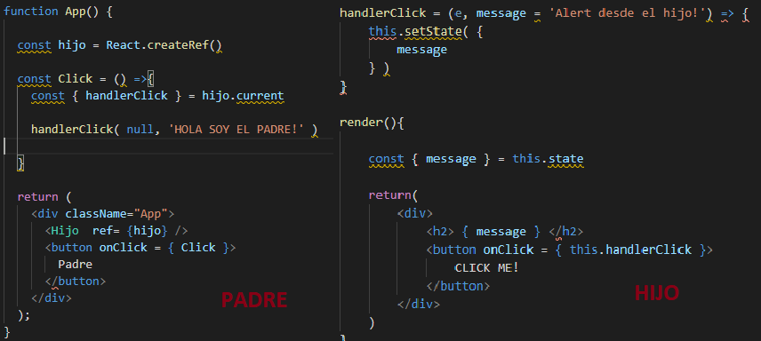
Debido a como es el manejo del DOM y los eventos es posible realizar una comunicacion Hijo Padre utilizando el mismo evento en ambos y para mandar informacion al evento, al cual llamaremos e se le agrega un atributo el cual subira en la jerarquia de eventos.
ACLARACION: gracias a esto es posible realizar comunicacion ñieto abuelo, o desde componentes inferiores a componentes de mayor jerarquia.
Esta practica es desaconsejable ya que existen dos flujos dentro de la aplicacion.
Para comunicar hermanos se debe implementar una prop que sea afectada por uno de ellos y el otro pueda observarla, es decir, cuando yo haga click en un boton dicho evento debe afectar la prop que recibe alguno de sus hermanos.
Para lograr comunicacion entre cualquierar componente a cualquier componente, sin importar cual sea su orden gerarquico, para ello se debe utilizar alguna libreria que permita dicha implementacion, la mas conocida a dia de hoy es PubSub.
La libreria PubSub nos permite mediante el metodo publish publicar un evento, tal como se muetras a continuacion:
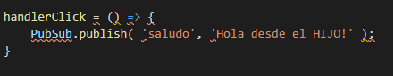
Por otro lado para escuchar el evento se debe utilizar el metodo suscribe es en componente que deseemos que escuche dicho evento:
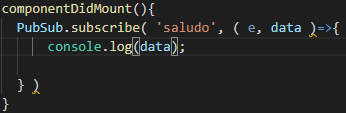
Es importar desuscribirse cuando el componenete sea destruido, utilizando el metodo unsuscribe.
Es posible utilizar comunicacion entre componenetes mediante contamienacion de variables globales. esta practica es desaconsejada, pero puede servir para aplicaciones de prueba.
El API Context es una API de REACT que permite la comunicacion de componentes, mediante un objeto, el cual genera los componentes Provider el cual posee un atributo value que le envia al componente hijo que desee recibirlo, y otro componente Consumer el cual obtiene los datos.
Consumer recibe por primer valor una funcion que optiene el atributo value.
Permite pasar informacion de un componente Hijo a un componente Padre. Esta prop consiste en pasar una funcion render al hijo el cual renderice de forma dinamica una serie de etiquetas, haciendo que los componenetes sean aun mas reutilizables, y no dependan tanto de la forma en la que uno quiere renderizar. Esto es muy util cuando se trabaja en componentes que iteran sobre listas y sus funcionalidades, y su visualizacion son parecidas.
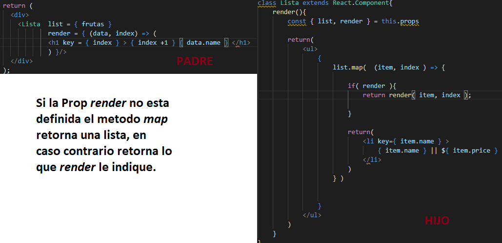
Permite la comunicacion bidirrecional, y es una funcion la cual retorna un nuevo componente.
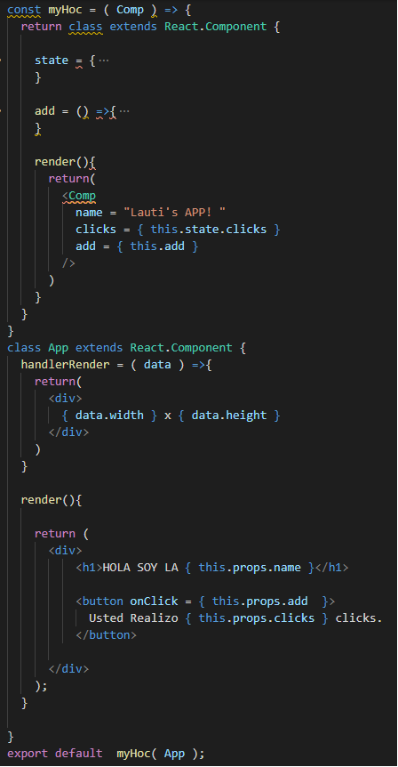
Los HOC se suelen nombrar con with seguido por la accion que realizan, en la imagen anterior el nombre apropiado seria withAdd.
Existen 2 formas de pasar configuraciones a un HOC, las cuales son
1- Mediante otro variable de entrada de la funcion HOC. 2- Mediante una doble execucion del la funcion HOC.
Nos permiten implementar componentes basados en funciones y dotarlos de las propiedades que poseen las propiedades de los componentes basados en clase.
Este hook permite utilizar el state y actualizarlo, para ello se debe importar el metodo useState del modulo react.
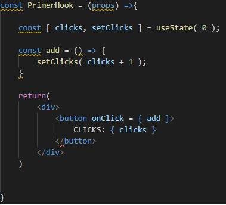
Este hook permite que los estados sean cualquier tipo de variable desde booleanos hasta objetos, aunque el equipo de desarrollo de REACT, no recomienda la implementacion de objetos, ya que para su actualizacion se necesita realizar un spread entre el estado anterior y el estado actual.
El hook useEffect viene a cumplir las funciones de los metodos de ciclo de vida como componentDidMount, componentDidUpdate y componentWillUnmount.
Para utilizar useEffect para suplir las funcionalidades de componentDidMount y componentDidUpdate se implementa una arrow function las cual ejecuta las tareas necesarias. En cambio si se desea utilizar componentWillUnmount debemos implementarle un return a useEffect el cual tambien debe ser una arrow function.
Como segundo parametro useEffect recibe un array el cual le indica cuando ejecutarse, es decir, se ejecutara cuando las variables dentro de ese array presenten un cambio.
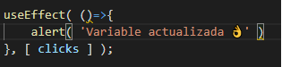
Si no le pasamos un array vacio se ejecutara una unica vez, en cambio si no le pasamos ningun valor se ejecutara siempre.
Los hooks se deben ejecutar en el 1er nivel del componente, no se deben implementar hooks en bucleas o condicionales, para implementar un hook personalizado su nombre debe comenzar con use tal como lo hacen los hooks de REACT.
Es un hook muy poco utilizado, ya que es practicamente igual que el useEffect, siempre se ejecutaran primero los useLayoutEffect antes que los useEffect, y se ejecuta antes de la actualizacion del DOM.
Este hook suplanta el API Context visto en la seccion anterior. Para utilizar el useContext le debo pasar por parametro el contexto que queremos utilizar.
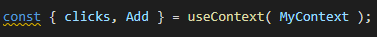
Este hook permite utilizar referencias, dentro de los componenetes funcionales, suplantando al metodo createRef.
Se pueden intstallar hooks de terceros con npm, como por ejemplo el hooks useDebounce el cual permite hacer peticiones cada un determinado tiempo.
Es una forma alternativa del hook useState y se suele utilizar cuando el estado posee muchas variables. Para la implementacion se debe pasar como primer parametro una funcion que recibe el state y la action, y como segundo parametro el estado inicial.
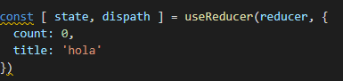
Luego la funcion reducer se suele implementar de la forma:
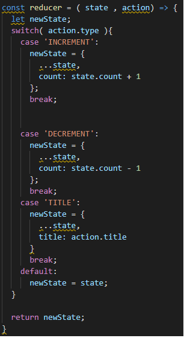
Este hook permite pasar la ref de un padre a un hijo, de primer valor recibe la referencia y como segundo parametro una arrow function, la cual retorna un objeto que estara disponible en el padre, utilizando la ref.
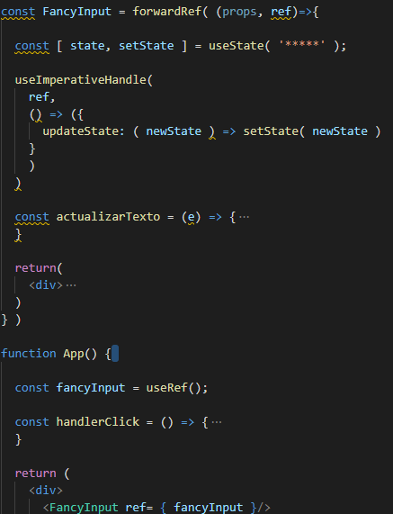
El metodo memo nos permite almacenar memoria y optimizar cuando la pagina web se actulizara, para ello debemos envolver a nuestro componente evitando asi las renderizacion inecesarias.
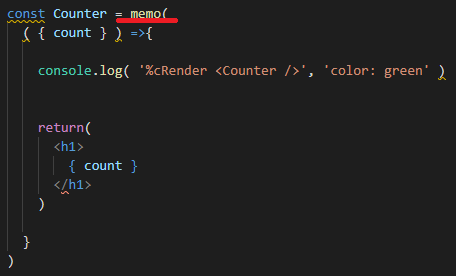
Cabe aclarar que las comparaciones de las props son de 1er nivel, si existen objetos anidados esto causa error. Para dichos casos memo admite como segundo parametro la funcion de diferenciacion, la cual debemos implementar nosotros. El componente re renderizara cuando la funcion de diferenciacion retorne false en caso contrario no se renderizara.
Evite crear funciones con cada renderizado y se utiliza con memo y sirve para cuando el padre le pase al hijo un funcion. Cabe destacar que si se desea actualizar un estado debemos utilizar la forma de arrow function para el setState.
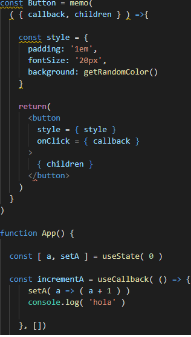
Al metodo useCallback se le pueden pasar dependencias para que la funcion se actualice cuando cambie algun valor.
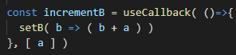
Nos permite memorizar, y no se renderiza a menos que cambie, como segundo parametro le podemos pasar una lista de dependencias indicandole cuando queremos que se actualice.
Los hooks personalizados nos permiten reutilizar logica, como por ejemplo peticiones http. Para obtener valores de un hook estos deben ser retornados.
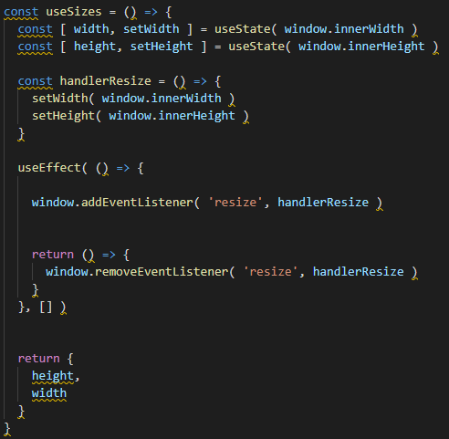
Este nos permite agregar etiquetas para las reactDevTools y poder identificarlo facilmente. Es recomendado utilizar esta herramienta cuando creemos un hook para compartir con la comunidad
Un plugin muy util para el desarrollo con hooks en REACT es el eslint-plugin-react-hooks el cual nos ayuda a tener buenas practicas de hooks.
npm i -D eslint-plugin-react-hooks
El manejo del los children dependen unicamente del componente padre, los children pueden ser cualquier elemento incluso arrow function, pero solo pueden ser renderizados textos o elementos de HTML.
Los children son una estructura de datos opacos, pues no sabemos que nos va a llegar, si un array, un objeto o texto plano.
Para el tratamiento de Children REACT proporciona diferentes metodos los cuales se encuentran en REACT.Children, estos metodos pueden ser:
1- map: itera solo sobre los hijos que puede renderizar y retorna un array.
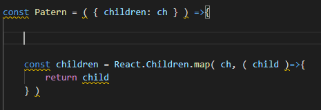
2- forEach: itera sobre todos los hijos que puede renderizar y retorna un elemento.
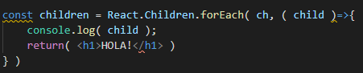
3- toArray: convierte el children en un array, muy util cuando no sabemos cuando children vamos a recibir.
4- only: verifica que solo tengamos un children.
Para pasarle props a un componente que venga como children debemos utilizar el metodo cloneElement de REACT, el cual recibe como primer parametro el elemento y como segundo parametro las props.
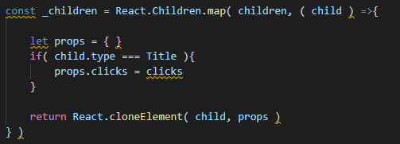
Puedo saber el type de un child y comprarlo directamente con el tipo de etiqueta que espero para saber que props pasarles.
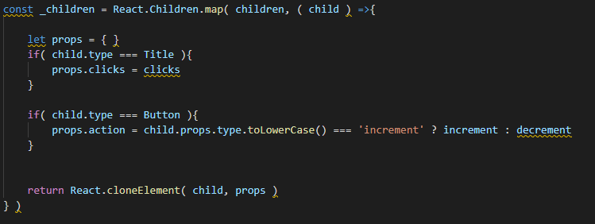
En este apartado veremos formas de mejorar la eficiencia de nuestro codigo basados en 2 tecnicas el code Splitting y el lazy load
Este metodo es dividir nuetro codigo, haciendo mas sencilla la carga.
Para generar esta accion debemos utilizar lazy, la cual recibe una arrow function y debe retornar la importacion asincrona de nuestro componente.
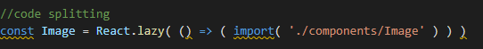
Este metodo consiste en descargar una fraccion de codigo, la cual necesita la aplicacion para arrancar y luego ir descargando los fragmentos de codigo que sean necesarios para su funcionamiento.
Para el lazy load debemos utilizar el componente Suspense de REACT.
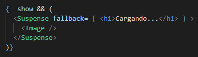
La propiedad transition recibe como parametros:
1- Los elementos a los cuales los afectara dicha propiedad. 2- El primer tiempo que se ingrese sera la duracion de la animacion 3- El segundo tiempo sera el delay o retraso de la animacion 4- Es el tipo de aceleracion de la animacion
Los elementos se pueden pasar por separado mediante los atributos:
a- transition-property b- trnasition-duration c- trnasition-delay d- trnasition-timing-function
Es posible generar animaciones personalizadas, lo que nos permite mejorar la experiencia de usuario. Esto se hace utilizando la propiedad animation se pueden declarar animaciones personalizadas con @keyframes.
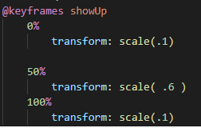
Es posible no declarar el valor 50% utilizando la propiedad animation-direction la cual nos permite seleccionar cual es la dirrecion de la animacion.
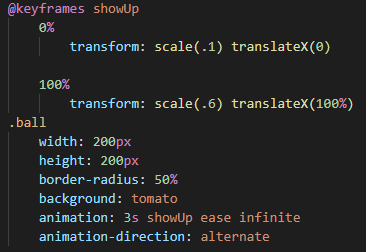
Mediante la propiedad animation-fill-mode puedo seleccionar las propiedades finales que tendra el objeto una vez acabada la animacion. Utilizando forwards para los valos finales y backwards para los iniciales.
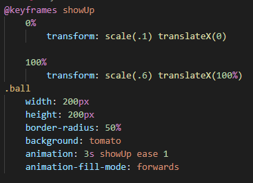